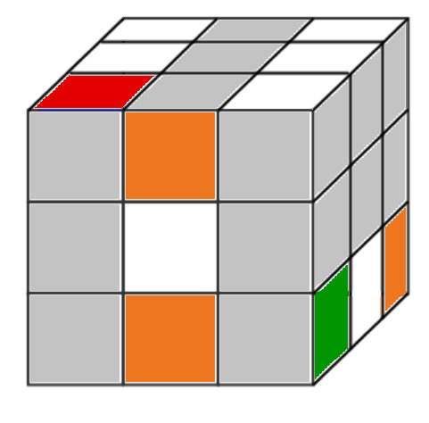

There are over 43 quintillion ways to solve the Rubik’s Cube. The good news is, you only need one. Solving the Cube is not only possible, some people will find it’s a lot easier than they thought. Each little cube is called a cubit, and has a unique set of colors. The trick is to get each cubit in its designated spot by using algorithms. An algorithm is like a play in football, or choreography for dancers. One move leads to the next, which leads to the next. So, let’s get started.
Stage One: The First Face
Solving this stage is not so much an algorithm as it is replacing the cubits to the top. White is the first color to start with.
- Locate the white middle piece, orient it so that it is on top, and turn up all of the sides so that you have as many white pieces on top as possible
 Find a white cubit on the bottom row and rotate it directly underneath a non-white cubit on the top
Find a white cubit on the bottom row and rotate it directly underneath a non-white cubit on the top- Turn the bottom level 90°
- Bring down the side it is going to
- Rotate the white cubit to that column
- Rotate the white column up to the top
- Repeat until the white face is complete
{kind=link}
{kind=link}
{kind=link}
{kind=link}
White cubits stuck on the bottom
{kind=link}
- Put the white piece underneath the cubit you want it to replace
- Bring down the side it is on so the “stuck” piece will be in the bottom level, but on the back
- Turn the bottom level (which the “stuck” piece is now on) 180°
- Bring the white side back up to the top
- Replace it as normal
{kind=link}
{kind=link}
{kind=link}
White cubits stuck on the third level
- Rotate whichever column it is located on down
- Turn the bottom level 90 degrees to the right if the side you just rotated is the right side, rotate to the left if you just rotated the left side
- Bring the white side back up to the top

- Replace the newly unstuck piece as normal
{kind=link}
{kind=link}
{kind=link}
After following these steps you should have something similar to this:
{kind=link}